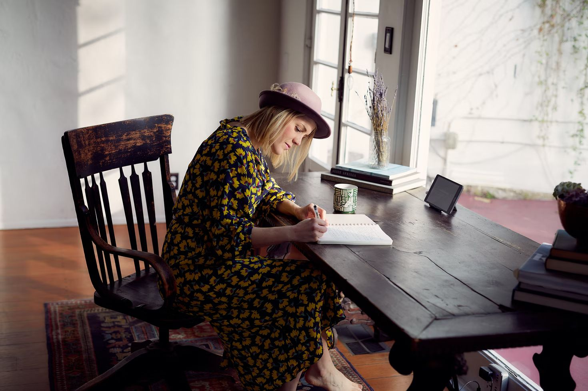

¿Cómo hacer el cambio de carrera a Diseño de Productos
Digitales?
¿Quieres saber qué se estudia para ser paisajista y formar parte
de uno de los gremios que están en auge a nivel laboral? Sigue
leyendo.
2 de junio de 2022
10 min
¿Qué hace un paisajista y cuánto gana?
¿Quieres saber qué se estudia para ser paisajista y formar parte
de uno de los gremios que están en auge a nivel laboral? Sigue
leyendo.
2 de junio de 2022
10 min

2 de junio de 2022
10 min
Todo lo que querías saber sobre Diseño UX / UI
Aunque los conceptos de experiencia de usuario y desarrollo
de interfaces han estado presentes durante décadas en
numerosas industrias, muchas personas aún tienen dudas sobre
lo que realmente hace un profesional en este campo.
Por qué algunas marcas fallan en el rebranding
As falhas de grandes marcas como Gap e Coca Cola explicadas.
2 de junio de 2022
10 min
¿Qué es AutoCAD y para qué sirve?
Unity te ofrece un gran abanico de posibilidades para
desarrollar tu juego, darlo a conocer en todo el mundo,
monetizar y triunfar por todo lo alto.
2 de junio de 2022
10 min